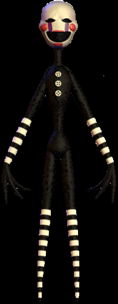

The Puppet

“The others are like animals, but I am very aware.”
- The Puppet
- The Puppet (also known as the Marionette) is an animatronic puppet from the 1987 Freddy Fazbear's Pizza location, although it's implied that it was originally from Fredbear's Family Diner. It first debuts in Five Nights at Freddy's 2 as the overarching antagonist, but later games show its heroic side. The identity of the soul possessing this animatronic is Charlotte Emily.
Physical Appearance
- The Puppet has a white face (which looks like a mask) with black, hollow eyes that sometimes gain small, white pupils. Its face is similar to that of a Pierrot, with rosy red cheeks, purple stripes that stretch from the bottom of its eyes to the top of its mouth, and red lipstick painted on in an exaggerated pucker.
- Its body is somewhat reminiscent of a sock monkey's, with its round, oblong shape, thin waist, three white buttons, rounded hands that feature three spindly fingers each, and white stripes on the wrists and ankles, along with a thin, long neck. It has no feet, but its legs are tapered to a point. It has neither hair nor head accessories. It's quite lanky, and according to one of the hallucinations in which it appears, it stretches from the floor to the ceiling of the pizzeria.
- In Five Nights at Freddy's VR: Help Wanted, the Puppet's body has a rusty looking brown color covering its entire body, head downwards. Its mask is also scratched, especially on the cheeks and lips. It is depicted in both animations and the gallery as moving its arms in a wavy fashion.
Personality
- The Puppet was originally an inanimate object, and therefore had no personality of its own, until it was seemingly possessed by the spirit of Charlotte Emily who was the daughter of Henry Emily the company's founder. As seen in the Completion ending of Freddy Fazbear's Pizzeria Simulator as well as the Security Puppet minigame, the Puppet short-circuited in the rain, while holding Charlie, allowing her spirit to enter the Puppet and take over. As it is confirmed to speak in Ultimate Custom Night. The Puppet is seemingly vengeful and sadistic, claiming to be very aware; even Phone Guy states that it is "always thinking".
- Despite this, the Puppet seemingly harbors no resentment against anyone it deems a threat (claiming they need to stay out of the way), though it does display sadistic tendencies, especially towards the player character in Ultimate Custom Night, such as musing at the fact they're powerless. It is also protective of the "Others", possibly referring to the other children murdered by William Afton, who now possess the animatronics Freddy, Bonnie, Chica, Foxy, and Golden Freddy, although it also claims they are "like animals" (incapable of thinking for themselves) showing that the spirit that possess the Puppet retains it's intellect. This is further shown as it is one of the only animatronics not fooled by the Freddy Fazbear Head. It talks to the player with familiarity, mentioning that it is no longer afraid of them, suggesting that the player is someone who used to be feared by the Puppet.

Alias
The Marrionette
Sockpuppet
Sockpuppet
Occupation
Prize Vendor
Affiliation
Freddy Fazbear's Pizza (1987)
Owner
Fazbear Entertainment, Inc.
Voice Provider
Jena Rundus
Mascot
Humanoid
Skin Color
Black and White
Eye Color
White
Gender
Unknown
Animatronic Set
Toys
References
1. Scott Cawthon - Intellectual Property Rights (IPR) - Page 2